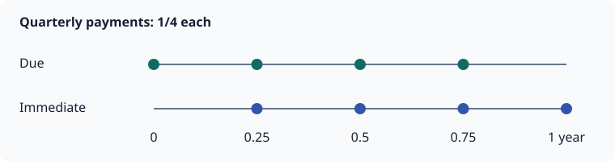

Insurance and annuities
Textbook products combine a life, an interest assumption and a unit-benefit schedule.
LifeContingency: pairing the assumptions
SingleLife and JointLife supply mortality and starting status. An interest rate or curve supplies discount factors. LifeContingency(life, interest) holds that pair of assumptions so that you can reuse it across products:
using LifeContingencies, MortalityTables
life = SingleLife(UltimateMortality([0.5, 0.5, 1.0]; start_age=60))
lc = LifeContingency(life, 0.05)
(survival_to_year_one = survival(lc, 1), discount_to_year_one = discount(lc, 1))(survival_to_year_one = 0.5, discount_to_year_one = 0.9523809523809523)The 50% survival probability comes from life; the discount factor comes from the 5% annual effective rate. A yield curve can replace that rate. The pair keeps the original issue-age selection and curve origin.
A LifeContingency does not yet specify which benefits are payable or when. The product constructor adds those rules: Insurance(lc, 2) gives two-year death cover, while AnnuityDue(lc, 2) gives two years of annuity payments using the same assumptions.
You can also pass the life and interest directly. These constructor styles are equivalent:
@assert present_value(Insurance(lc, 2)) ≈ present_value(Insurance(life, 0.05, 2))
@assert present_value(AnnuityDue(lc, 2)) ≈ present_value(AnnuityDue(life, 0.05, 2))
(
insurance = present_value(Insurance(lc, 2)),
annuity_due = present_value(AnnuityDue(lc, 2)),
)(insurance = 0.7029478458049887, annuity_due = 1.4761904761904763)Use lc when sharing a valuation basis across calculations. Use (life, interest, ...) when it is more convenient to supply the assumptions at the product call.
Payment amounts and times
| Product | Payment amount | Scheduled times |
|---|---|---|
Insurance(lc, n) | 1 on death during a covered year | 1:n, at year end |
AnnuityDue(lc, n; frequency=f, start_time=s) | 1/f per installment | s + k/f, for k=0:n*f-1 |
AnnuityImmediate(lc, n; frequency=f, start_time=s) | 1/f per installment | s + k/f, for k=1:n*f |
Omit n for a lifetime product when the mortality assumption supports it. The annuity's term is its payment duration, measured from commencement, not from issue.

due = AnnuityDue(lc, 1; frequency=4)
immediate = AnnuityImmediate(lc, 1; frequency=4)
@assert benefit(due) == 0.25
(due_times = collect(timepoints(due)), immediate_times = collect(timepoints(immediate)))(due_times = [0.0, 0.25, 0.5, 0.75], immediate_times = [0.25, 0.5, 0.75, 1.0])A monthly annuity pays twelve installments of 1/12 per full year. To model a monthly amount of 1, multiply its expected cash flows or PV by 12. To model an annual benefit of 12,000 paid monthly, multiply by 12,000.
Deferral
start_time is a whole number of years from issue. Before commencement there are no annuity payments. The mortality and curve origins remain at issue.
deferred = AnnuityDue(lc, 2; start_time=1)
(times = collect(timepoints(deferred)), probability = probability(deferred),
cashflows = cashflows(deferred))(times = [1.0, 2.0], probability = [0.5, 0.25], cashflows = [0.5, 0.25])Guaranteed installments
certain specifies the period certain: a whole number of years of guaranteed payments starting at commencement. At frequency f, it covers the first certain*f installments, limited by the term. It does not add payments before commencement. Those installments are unconditional, even if death occurs during deferral; later installments require the contingency to be in force.
guaranteed = AnnuityDue(lc, 2; start_time=1, certain=1)
@assert probability(guaranteed) ≈ [1.0, 0.25]
@assert probability(AnnuityDue(lc, 2; start_time=1, certain=0)) ≈ [0.5, 0.25]
probability(guaranteed)2-element Vector{Float64}:
1.0
0.25A due annuity's payment at commencement is its first guaranteed installment. A one-year annual guarantee covers that installment alone. certain=0 guarantees none.
Guarantees survive extinction and observed death:
dead = SingleLife(life.mortality; alive=false)
guaranteed_dead = AnnuityDue(dead, 0.0, 3; certain=2)
@assert cashflows(guaranteed_dead) == [1.0, 1.0, 0.0]
cashflows(guaranteed_dead)3-element Vector{Float64}:
1.0
1.0
0.0Inspect a product
| View | Meaning |
|---|---|
timepoints(ins) | Dates of scheduled payments, as durations from issue |
benefit(ins) | Unit amount: 1 for insurance, 1/frequency for annuities |
probability(ins) | Probability each benefit is payable; 1 for guarantees |
cashflows(ins) | Expected amounts: benefit(ins) .* probability(ins) |
discount(ins) | Issue-date discount factor at each payment date |
survival(ins) | In-force probability at each year's start for insurance, or at each payment date for annuities |
survival(ins) need not equal probability(ins): death insurance pays on a transition, and an annuity guarantee does not require survival. survival(ins, t) always evaluates the life's contingency at duration t.
ins = Insurance(lc)
@assert cashflows(ins) ≈ benefit(ins) .* probability(ins)
@assert present_value(ins) ≈ sum(cashflows(ins) .* discount(ins))
[(time = t, in_force_at_year_start = s, death_probability = p, cashflow = c)
for (t, s, p, c) in zip(timepoints(ins), survival(ins), probability(ins), cashflows(ins))]3-element Vector{@NamedTuple{time::Int64, in_force_at_year_start::Float64, death_probability::Float64, cashflow::Float64}}:
(time = 1, in_force_at_year_start = 1.0, death_probability = 0.5, cashflow = 0.5)
(time = 2, in_force_at_year_start = 0.5, death_probability = 0.25, cashflow = 0.25)
(time = 3, in_force_at_year_start = 0.25, death_probability = 0.25, cashflow = 0.25)The numeric views are vectors. timepoints is a range; call collect when a concrete vector is needed.
Zero duration and invalid inputs
A zero term produces an empty schedule and expected stream, with PV zero. Negative or fractional terms error. frequency must be a positive integer; certain and start_time must be nonnegative integers.
empty_insurance = Insurance(lc, 0)
@assert isempty(cashflows(empty_insurance))
@assert present_value(empty_insurance) == 0
(times = collect(timepoints(empty_insurance)), cashflows = cashflows(empty_insurance),
pv = present_value(empty_insurance))(times = Int64[], cashflows = Float64[], pv = 0.0)A term ending past mortality support is allowed only where extinction supplies the needed continuation. See Mortality support.
Explicit maturity: endowment insurance
An incomplete mortality table can support a contract that pays on survival to an explicit maturity. Endowment(lc, n) pays on death during n years or on survival to year n. The positive integer n is a contractual assumption, not a value inferred from table support.
short_lc = LifeContingency(SingleLife(UltimateMortality([0.1, 0.2]; start_age=60)), 0.05)
e = Endowment(short_lc, 2)
@assert present_value(e) ≈ present_value(Insurance(short_lc, 2)) + APV(short_lc, 2)
@assert present_value(e, 2; state=:alive) == 0 # maturity benefit has settled
(time = collect(timepoints(e)), expected_amount = cashflows(e), pv = present_value(e))(time = [1, 2], expected_amount = [0.09999999999999998, 0.9], pv = 0.9115646258503401)Known current statuses and payment phases
present_value(product, t; state=...) values from the supplied current status. For an annuity, :dead retains only the remaining guarantees. It never divides unconditional guarantees by survival. Joint statuses follow the order of the two lives.
At phase=:before (the default), end-period payments at t have settled and due installments remain outstanding. phase=:after also settles due installments. Conditional insurance and endowment values require integer anniversaries; an alive/dead state alone cannot identify incurred-but-unpaid claims between annual settlements.
g = AnnuityDue(lc, 3; certain=2)
@assert present_value(g, 1; state=:dead) ≈ 1
@assert present_value(g, 1; state=:dead, phase=:after) == 0
(alive_value = present_value(g, 1; state=:alive), beneficiary_value = present_value(g, 1; state=:dead))(alive_value = 1.4761904761904763, beneficiary_value = 1.0)